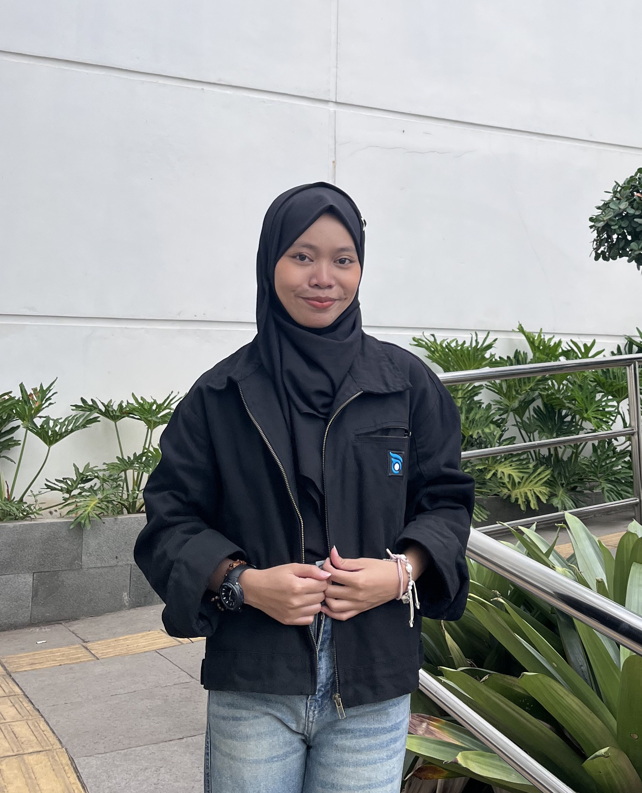

Tentang Saya
Halo! Nama aku Lia Nurlaila, mahasiswa Teknik Informatika di UIN Sunan Gunung Djati Bandung.
Aku termasuk orang yang awalnya cukup pendiam ketika baru bertemu dengan orang lain. Tapi setelah sudah mengenal dan merasa nyaman, biasanya jadi lebih banyak ngobrol dan lebih terbuka.
Saat ini aku sedang menjalani semester 5 dan terus mencoba mengembangkan kemampuan di bidang teknologi, pemrograman, desain, dan pengembangan website.
Biodata Singkat
Lia Nurlaila
1247050039
Mahasiswa
Teknik Informatika
Sains dan Teknologi
UIN Sunan Gunung Djati Bandung
5
Jawa Barat, Indonesia
Minat Saya
Beberapa hal yang menarik perhatian dan ingin terus aku pelajari:
Perjalanan Kuliahku
Sedikit gambaran tentang perjalanan akademikku saat ini.
Semester Berjalan
Mata Kuliah
Total SKS
Semangat Belajar
Motto Hidup
"Slow progres is better than no progres."
Mata Kuliah
Berikut adalah mata kuliah yang sedang ditempuh, termasuk mata kuliah yang tercatat pada semester berbeda.
| No | Mata Kuliah | Kelas | SKS | SMT | Ruang | Waktu | Dosen |
|---|---|---|---|---|---|---|---|
| 1 | 20100470501024 - Manajemen Basis Data | B | 3 | 5 | R.4.09 | Senin 07:00-09:30 | Wildan Budiawan Zulfikar S.T., M.Kom. |
| 2 | 20100470501026 - Jaringan Komputer | B | 3 | 5 | R.4.10 | Kamis 07:00-09:30 | Cecep Nurul Alam M.T. |
| 3 | 20100470501030 - Pengembangan Aplikasi Web | B | 3 | 5 | Gedung R.3.9 | Jumat 09:30-12:00 | Muhammad Deden Firdaus ST, M.Kom |
| 4 | 20100470501032 - Interaksi Manusia dan Komputer | B | 3 | 5 | R.4.01 | Rabu 09:30-12:00 | Dr. Cepy Slamet S.T., M.Kom. |
| 5 | 20100470501034 - Manajemen Proyek Perangkat Lunak | B | 3 | 5 | R.4.01 | Senin 09:30-12:00 | Agung Wahana S.E., M.T. |
| 6 | 20100470501028 - Pengembangan Aplikasi Mobile | B | 3 | 5 | R.4.12 | Kamis 12:40-15:10 | H. Aldy Rialdy Atmadja M.T. |
| 7 | Inteligensia Buatan | A | 3 | 5 | R.4.10 | Selasa 15:30-18:00 | Jumadi ST., M.Cs. |
| 8 | 20100470503005 - ICT dan Islam | A | 2 | 7 | R.4.11 | Selasa 12:40-14:20 | Eva Nurlatifah M.Sc. |
GitHub Saya
Beberapa project dan hasil belajar nantinya bisa dilihat melalui akun GitHub.
Kunjungi GitHub Saya →Hubungi Saya
Untuk informasi atau keperluan lainnya, kamu bisa menghubungi melalui media yang tersedia.